← 返回阅读库 · 原论文目录
论文讲解阅读文档 · 机器人学 · v093
Diffusion Models for Robotics
视频时长 00:07:40；讲解文字 4,185 字符；提取讲解画面 13 张。按视频原顺序阅读，每段文字保留时间戳。
文字来自整段视频的自动语音转写，按自然停顿分段，并与 PPT / 论文页面 / 演示画面对齐。未将讲解压缩为摘要；术语、数字和口述公式请结合画面及原论文核对。 阅读稿已校正规范部分明确术语误识别；原始逐字稿和每处修改记录另行保留。
讲解画面为源视频截图（640×360），不是可编辑 PPT 文件。全片按每秒 2 帧扫描内容变化，逐步展开页保留；连续动画保留代表画面。清晰度受源视频限制。
下载完整资料包 · 含离线 HTML、PDF、Word、全部 PPT 画面和字幕。
原论文与材料
Scaling Robot Learning with Semantically Imagined Experience · 下载完整 PDF（21 页）
Diffusion Policy: Visuomotor Policy Learning via Action Diffusion · 下载完整 PDF（19 页）
Efficient Diffusion Policies for Offline Reinforcement Learning · 下载完整 PDF（18 页）
Crossway Diffusion: Improving Diffusion-based Visuomotor Policy via Self-supervised Learning · 下载完整 PDF（15 页）
Imitating Human Behaviour with Diffusion Models · 下载完整 PDF（24 页）
Planning with Diffusion for Flexible Behavior Synthesis · 下载完整 PDF（14 页）
Synthetic Experience Replay · 下载完整 PDF（22 页）
Learning Universal Policies via Text-Guided Video Generation · 下载完整 PDF（17 页）
Diffusion Model-Augmented Behavioral Cloning · 下载完整 PDF（25 页）
Diffusion Policies as an Expressive Policy Class for Offline Reinforcement Learning · 下载完整 PDF（17 页）
Is Conditional Generative Modeling all you need for Decision-Making? · 下载完整 PDF（24 页）
按时间阅读
00:00:00–00:00:50 · 画面 001
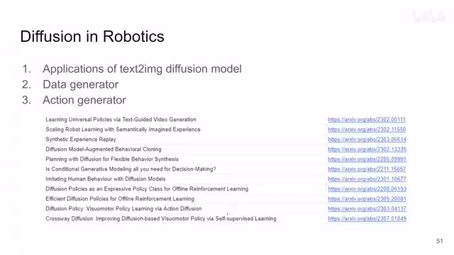
00:00:00–00:00:50 · 画面 001大家好啊，今天我们来快速水上 11 篇论文啊，一次水个够。那么这个系列呢，就是我粗浅的整理一下某一个方向中具有代表性的工作啊。我们今天的主题呢，就是这个 Diffusion Models 在 Robotics 中的应用，包括呢，从一开始的就是我直接拿这个 text to image 这种 diffusion model，我直接拿这种 model 去用，然后呢，再逐渐过渡到我用 diffusion model 本身去做一个 data generator，让它生成符合一个复杂 distribution 的这样的样本。那么最后呢，更具体一点呢，就是如果这个 distribution 是我们的 action space，我希望我用 diffusion model 直接生成一个 action 或者是 action sequence 这样的一种配置。那么这个视频呢，我们就按照这样的顺序
把这 11 篇文章给他串起来，我们直接开始。首先第一篇这个 universal policy 这篇
00:00:50–00:01:32 · 画面 002
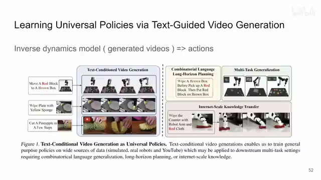
00:00:50–00:01:32 · 画面 002这篇的思路非常直接，就是我用 text to image diffusion，那它作为一个 text to imagetext to video 这样一个身经百战的 model，你说 YouTube 上的视频对吧，这个机器人的各种视频，各种模拟的也好，真实的也好，机器人的视频哪个他没有见过，那他是见的多了。那这篇文章呢，就是根据这样的一个模型，你把一个文本输进去，让它生成一个视频。那么有了这个视频之后呢，这篇文章是通过一个 inverse dynamics model根据两个相邻的图像把它中间发生的 action 给它解出来。那么有了这个 action 有了 state，你就可以做你任何想做的训练了。那么这个是本文最核心的思想。那么下一篇呢，同样也是借用了这么一个身经百战的 model，只不过这里的作者的用法呢，是对我们已经有的收集好的图像作为一个 augmentation，确切说呢，就是 semantic editing，就是你看，把这个橙子换成个苹果，把这个零食换成其他的种类的零食对吧，你可以看到像这样子
00:01:32–00:02:03 · 画面 003
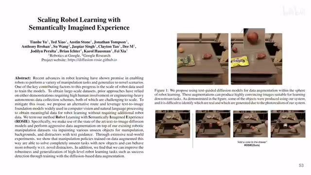
00:01:32–00:02:03 · 画面 003我只需要收集了一张真实的图像，我就可以根据它生成很多张相关的图像。那这样子呢，你的数据集就得到了极大的扩充，这是这一片的主要的思想。那么既然我们收到生成新的数据，很多时候我们做各种 training 的时候，我们的数据其实并不是那么标准的图像或者是什么，它可能跟一般的图像有 domain gap，甚至它可能就不是一个图像。那么这个时候呢，我们就要单独训练一个 diffusion model 去做 data augmentation
00:02:03–00:02:34 · 画面 004
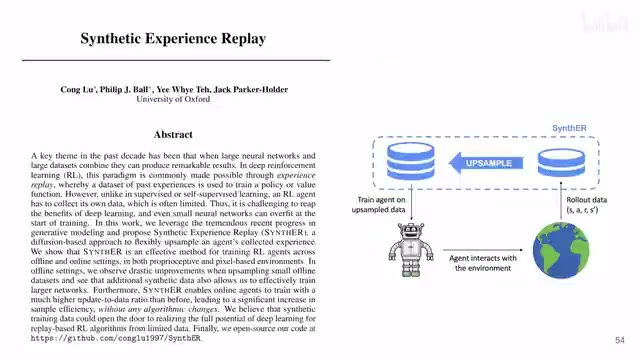
00:02:03–00:02:34 · 画面 004那么这个文章我们也介绍过了，就是作者用一个 diffusion model 帮我们 agent 收集到的 trajectory 学习一下，它的核心的思想还是我用 diffusion model 去生成符合我们这个分布的样本来达到这个 data augmentation 的目的。这是这一篇，那么再往下这一篇它的用法就稍微有点特别了，还是我们在我们已经收集好的数据上训练一个 diffusion model，只不过这里我们把一个 diffusion model 作为一个辅助的任务
00:02:34–00:03:09 · 画面 005
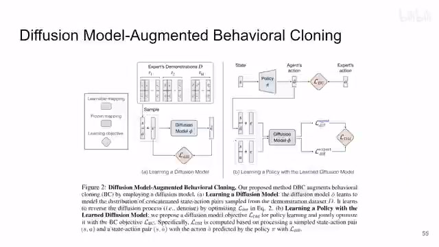
00:02:34–00:03:09 · 画面 005你在做 behavioral cloning 的时候有正常的 behavioral cloning 的 loss 来来监督你的这个 action 的生成对吧，同时呢，你用 diffusion model 这个 diffusion loss 也作为一个辅助的任务，他们两个一起去更新 policy。这个是本文的方法。那么截止到这里呢，我们涵盖了使用 text to image，使用 diffusion model，然后呢，涵盖了用这个 diffusion model 做 data augmentation 那这样的任务
那么再往下呢，这一篇呢就是一个比较经典的用 diffusion model 做 planning。那这一篇呢，它是把每一个时刻的 state vector 和 action 排成一个列。那每一时刻一列一列，那么整个一个 trajectory 就会变成一个 2D 的图像。那你用这样的图像去生成一个 diffusion model，那你再从这个 diffusion model 中采样，你这个 state sequence 也有 action sequence 也有，你直接比这个 action sequence 执行那就好了。
00:03:09–00:04:17 · 画面 006
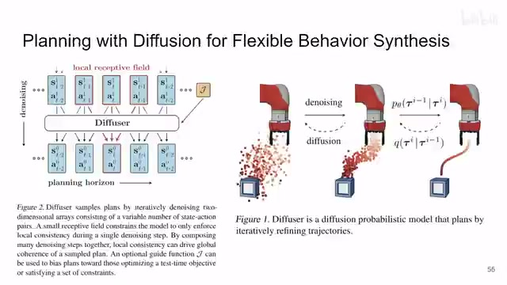
00:03:09–00:04:17 · 画面 006同时，你想，你既然是生成了整个 trajectory，你既然可以在 denoising 的过程中限定 trajectory 的初始和终止的这个位置，相当于做 image inpainting 的感觉。同时呢，你这个 diffusion model 也可以加各种 guidance。那这样子呢，你就可以更好的控制这个轨迹的生成，让 diffusion model 帮你规划出一条 trajectory，它的网站做的也很好，非常推荐你去看一看。
当然，这一片的局限呢也是很明显的就是，你看我什么样的数据，什么样的 state 能和 action 这个 dimension 差不多能和它接在一起，那我必然都是那种低维度的这个 state。那我如果遇到了更高维度的，比如说图像这种 state 那我该怎么办呢？那么这个呢在后面的文章中会涉及到。我们再看下一篇，这一篇同样的也是我去根据这个 trajectory 去建模，只不过这一篇是单纯的生成了 state sequence，然后跟我们之前说的那篇一样，两个 state 之间用 inverse dynamics 把这个 action 给它解出来。这是这一篇 decision diffuser。那么再往下，这一篇就是要帮我们克服 image observation 的这些困难了。
00:04:17–00:04:35 · 画面 007
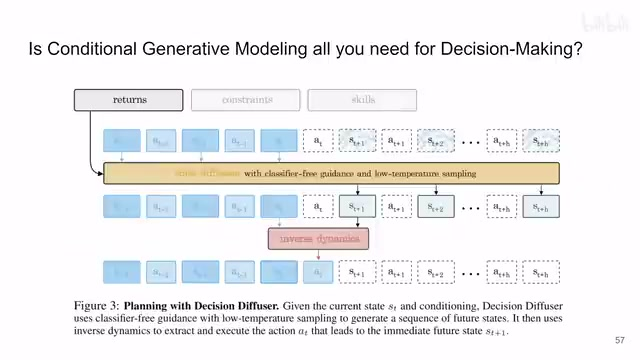
00:04:17–00:04:35 · 画面 00700:04:35–00:05:00 · 画面 008
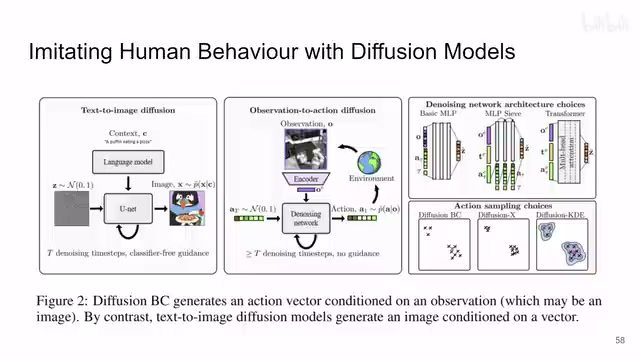
00:04:35–00:05:00 · 画面 008那么你可以看到，这一篇这个 Diffusion Model 它生成的就是这个 Action 了。这里作者还探讨了不同的还有 Classifier Guidance 这些东西。只不过这一篇的作者可能不太是 Robotics 相关的，他们选的 Evaluation 的任务比较新奇，但是用 Diffusion Model 直接去做 Behavior Cloning 还是很有参考价值的。
那么再往下呢，既然你已经有了 behavior cloning，那是不是再加一个 reward 加到这个 diffusion model 里面就可以做这个 reinforcement learning 了？那么这一篇呢是 diffusion Q learning，那就是用原本的 diffusion loss。
00:05:00–00:05:37 · 画面 009
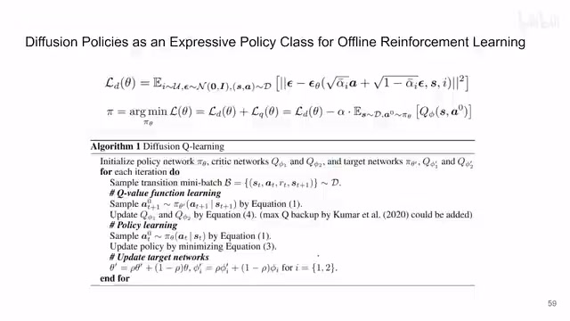
00:05:00–00:05:37 · 画面 009加上一个 q learning 的 loss。那这个 q learning 它显然需要 action，这个 action 就是 diffusion model 生成的。但是因为我们 diffusion model 需要一遍一遍的去运行这个模型才能最终生成一个 action，那么你把这个 loss 加在这个 action 上，你再一遍一遍的把这个梯度传递回去。那么它的训练呢也是很有挑战性的，这也意味着你的这个 diffusion step 也不能给很高。那么基于这篇呢，后面就有一篇改进。
00:05:37–00:05:54 · 画面 010
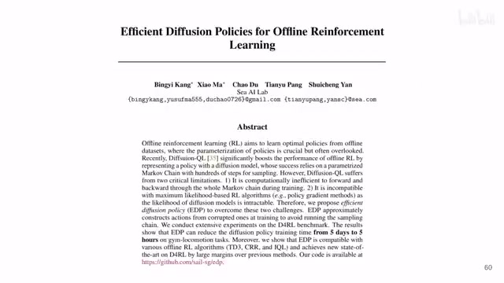
00:05:37–00:05:54 · 画面 010就是我每次去做这个 Q-learning 的时候，我不是真正的去一次一次迭代把这个 action 生成出来，我是通过一些近似的方法把这个 action 给它搞出来。同时呢，它也换了不同的 sampler，达到一个更快的训练，更好的一个效果。那么最后的环节就是我们之前介绍的 Diffusion Policy，它相当于对 Diffusion BC 的做 Behavior Cloning 的另一种解。这里你看到它的 Condition 是一个 Image Sequence，它生成的东西是 Action Sequence，但是核心的思路还是 Diffusion Model 生成 Action Sequence，但是生成的过程 Condition on Observations。这里作者还研究了两种结构，一种是 CNN，另一种是 Transformer 做 Cross Attention 的这种。那么之前我们也是出视频介绍过了。
00:05:54–00:06:26 · 画面 011
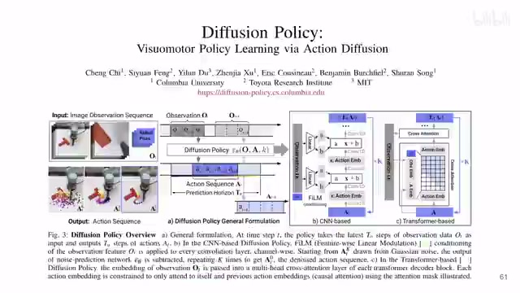
00:05:54–00:06:26 · 画面 011那么感兴趣的朋友呢，你可以翻一下我们之前的视频。那么顺便一提，这个工作的代码它也是写的非常漂亮的。
00:06:26–00:07:39 · 画面 012
00:06:26–00:07:39 · 画面 012那么最后的最后，我们到了这一篇，就是在这个 diffusion policy，你可以看到这个其实是个 diffusion policy，只是被动的把这个 condition 加进去。你实际 diffusion 的过程中到底用没有这个 condition，用多少，这个其实作者是没法控制的。那么在这篇文章 crossway diffusion 里面，他就是把 denoise 过程中的这个 intermediate representation，这里作者叫它 intersection 给它取出来。
用这个 representation 去重建出你一开始输入的这些图像也好，也包括甚至低维的这些 state 也好，做一个 reconstruction 的任务。那这样子有一个 reconstruction loss 和这个 diffusion loss 一起训练。那么当然你在 inference 的时候，这个 decoder 就可以丢掉了。那么这一片呢，是相当于 diffusion policy 一个很直接的改进，但是他呢是把 self-supervised learning 这个东西带入到我们 diffusion 里面了。
这其实是一个挺有意思的组合。那么后面呢，我们再就这篇文章会详细的再出一个视频。好的，到这里呢，我们以非常快的速度介绍了一共 11 篇 Diffusion Model 在 Robotics 里面的各种应用。那么当然我看论文还是很局限的，如果你觉得任何有相关的这方面的工作值得我们一起来探讨一下，就麻烦你在评论里面写一下。好的，那么感谢你的收看，再见。
00:07:39–00:07:40 · 画面 013
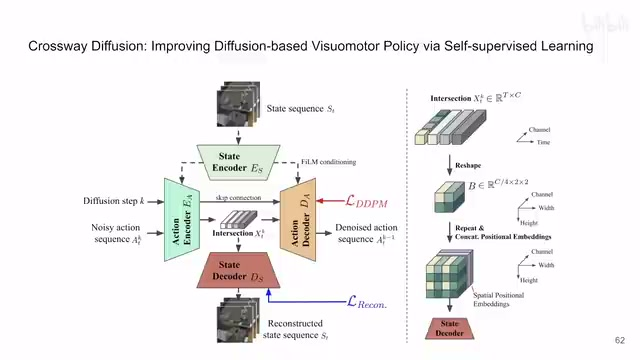
00:07:39–00:07:40 · 画面 013转写与来源说明 · 0 个自动复核提示
保留 21 个原始语音片段，0 个片段触发自动复核提示。提示仅用于定位可能的术语、重复或识别问题，不等于已确认错误。
讲解画面为源视频截图（640×360），不是可编辑 PPT 文件。全片按每秒 2 帧扫描内容变化，逐步展开页保留；连续动画保留代表画面。清晰度受源视频限制。
原视频：paper/合集_2026-10-16_机器人学/[论文夕拾]Diffusion Models for Robotics.mp4
SHA-256：9b65ed12140d8caf1ff7d96f1cf724c1eb06223807088101c61b8dd3c052fd98
全文按视频语音与画面制作。原论文可从上方链接下载；完整资料包保留全文、原始逐字稿、字幕和校对记录。